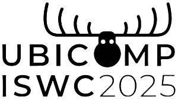
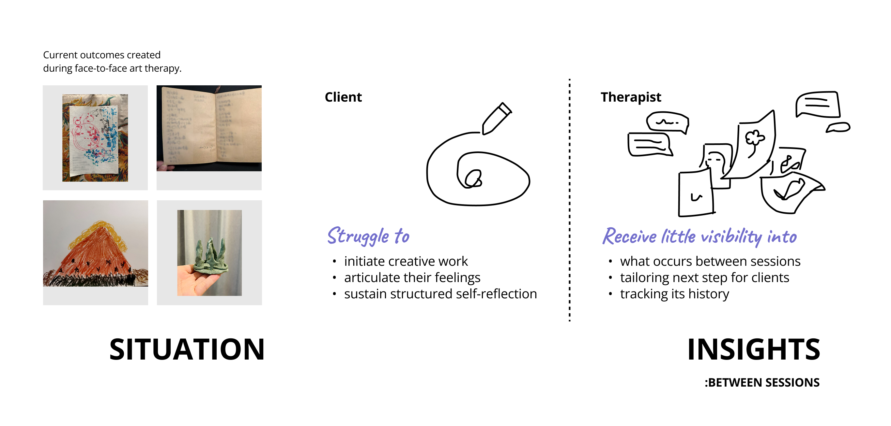

TherAIssist
A multi-agent, dual-end system — AIGC art co-creation paired with a conversational agent. Clients complete expressive homework between sessions; therapists review AI-compiled history and tailor the agents.
Research-to-product. Published at ↗Ubicomp 2025 (CCF-A)
Between sessions: clients are stuck, therapists are blind.
Art therapy works best face-to-face — a therapist guides the art-making, prompts reflection, and reads emotional cues in the moment. But today, access to qualified art therapists is constrained by time and geography, making sustained in-person therapy rarely feasible. The gap gets filled with homework: art-making and reflection exercises clients complete alone between sessions. That's where the real problem starts.

Research question: can AI coordinate a therapeutic collaboration between two people who are never online at the same time?
Two interfaces. Opposite cognitive modes. Connected through AI.
Client — Two-phase homework workflow
Each homework session runs in two sequential phases. Clients complete both on their own — no therapist involvement required in real time.
Phase 1 · Art-makingClients draw on a canvas using semantic AI brushes — each brush maps to a concept (Human, Cloud, Tree, Ocean...) rather than an artistic style. While drawing, they describe what they're making by voice. The Art-making Agent converts those descriptions into structured prompts, and Stable Diffusion generates a co-created artwork in real time. The result is shaped by language, not drawing skill.
Color-coded segments map to conceptual categories, not artistic styles — lowers the creative barrier to zero.
Art-making Agent converts speech to structured prompts. Stable Diffusion output updates in real time alongside the drawing canvas.
After the artwork is generated, the Conversation Agent guides a multi-round reflection grounded in what the client just created. It follows the therapist's pre-configured dialogue principles — asking structured questions that help clients verbalize emotions tied to the artwork. All conversation data syncs to the therapist's dashboard automatically.
Questions are grounded in the client's specific artwork — not generic prompts. Reduces abstraction, increases emotional specificity.
Dialogue principles written by the therapist are injected directly into the agent's prompt. The client experiences the therapist's style even when offline.
Therapist — Configure · Review · Adapt
The therapist-facing dashboard is a no-code agent configuration interface. Therapists embed their clinical expertise directly into AI behavior — without writing a single line of code.
Write and reorder dialogue principles, assign homework topics, and set a personalized opening message per client. Changes take effect in the next session immediately.
Per-client view with full homework records: original drawing, co-created artwork, conversation log, and AI-compiled summary with 3 suggested entry-point questions for the next in-session conversation.
30-day field study
354 sessions
24 clients over 30 days. 266 sessions completed both phases; 88 art-making only.
151 hours
66.4h art-making · 84.6h discussion. Average 14.75 sessions per client.
3,462 messages
772 during art-making · 2,690 during discussion phases. Evening peak usage confirmed async value.
Five specialized agents. One therapeutic loop. No synchronous dependency.
The core architectural decision: instead of a single general LLM, we designed five agents each owning one specific task. This makes behavior auditable, independently improvable, and safe to deploy in a clinical context.

LLM Agent pipeline — GLM-4
Art-making Agent
Converts voice descriptions into image generation prompts.
- Client-side only — no therapist involvement
- Voice → text prompt → AIGC pipeline
Conversation Agent
Guides post-creation reflection anchored to the artwork.
- Therapist's principles embedded in prompt template
- Personalised per therapist, not per session
Summary Agent
Condenses homework into a structured pre-session brief for the therapist.
- Covers both art-making & discussion phases
- Poses questions — avoids interpretation
- 20 min of homework → 3 therapist entry-point questions
Three things this project changed about how I think about AI systems.
Agent specialization is a product decision, not a technical one
We could have used one LLM for everything. We didn't — because specialization makes each agent's behavior predictable, auditable, and safe to put in a clinical context. The architecture reflects the trust model, not just the task model.
AI customization UI is prompt engineering for non-engineers
When therapists reorder dialogue principles in the UI, they're writing LLM system prompts — they just don't know it. Designing that abstraction right is a product design problem. The interface defines what domain experts can and can't configure.
AI should know when not to interpret
The Summary Agent was deliberately constrained to pose questions, not make clinical interpretations. That constraint was a product decision — keeping the therapist as the expert. In high-stakes domains, defining what AI won't do is as important as what it will.
"The hardest part wasn't building the agents — it was deciding where each one's responsibility ended. In a clinical context, those boundaries aren't technical defaults. They're design choices with real consequences."
— Project retrospective